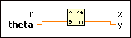
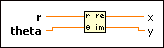

Polar To Re/Im Function
Owning Palette: Complex Functions
Requires: Base Development System
Converts the polar components of a complex number into its rectangular components.

 Add to the block diagram Add to the block diagram |
 Find on the palette Find on the palette |
Owning Palette: Complex Functions
Requires: Base Development System
Converts the polar components of a complex number into its rectangular components.

| Add to the block diagram |
Find on the palette |
This function converts the polar components to rectangular components using following equations:
x = r*cos(theta)
y = r*sin(theta)